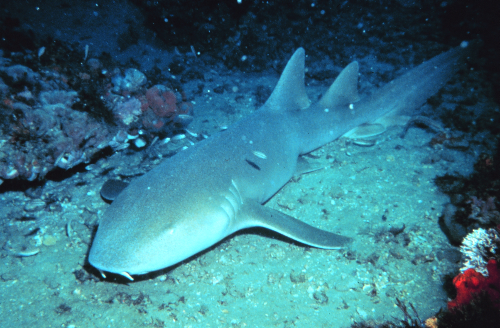

Ginglymostoma cirratum
Tiburón Gato
También llamado tiburón nodriza, es un nadador lento y dócil que pasa el día descansando en grupos sobre el fondo y caza de noche aspirando presas como una aspiradora gigante. Sus barbillones le «gustan» el camino en la arena.
- HábitatFondos arenosos y arrecifes del Caribe
- DietaMoluscos, crustáceos y peces pequeños
- ConservaciónVulnerable